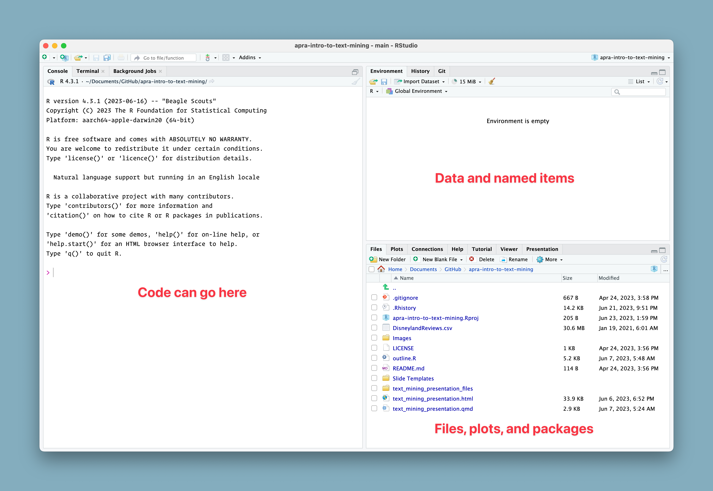
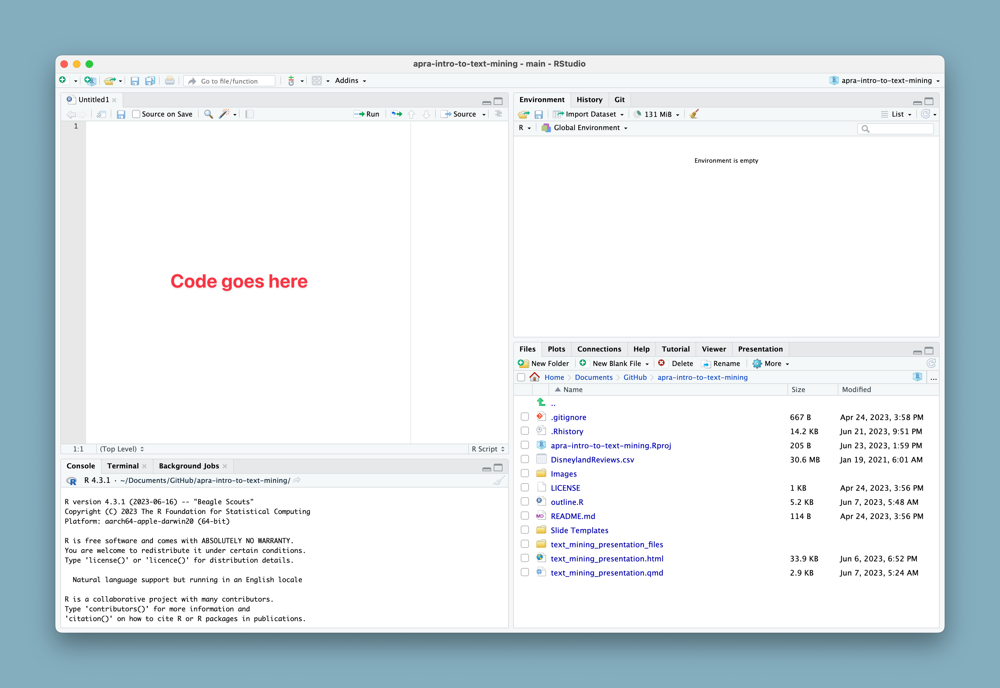
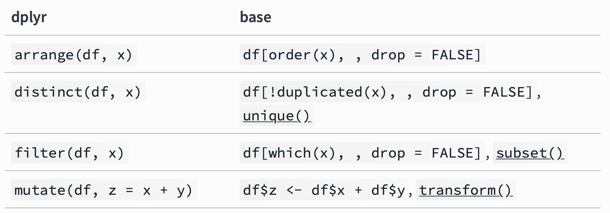
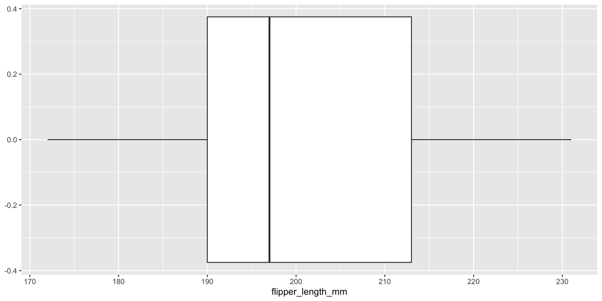
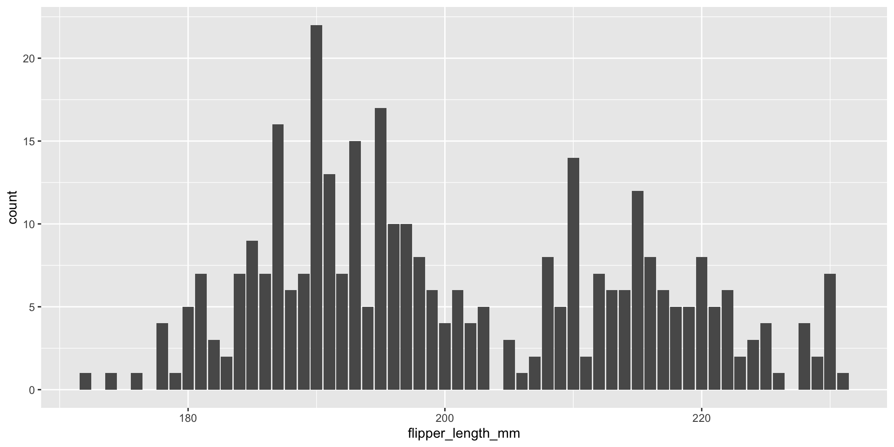
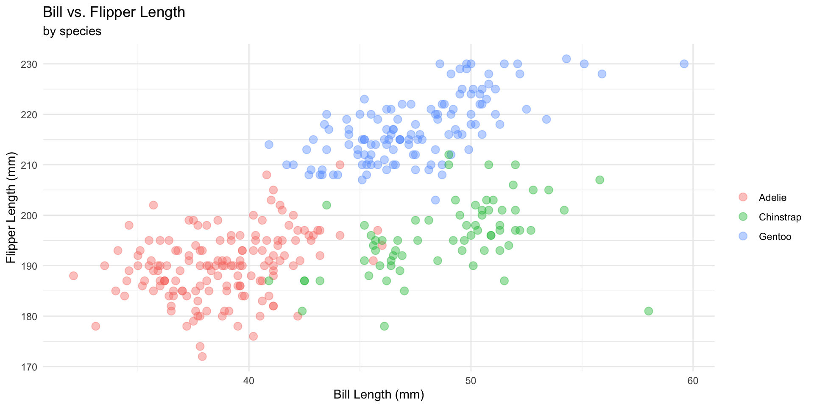

# A tibble: 344 × 8
species island bill_length_mm bill_depth_mm flipper_length_mm body_mass_g
<fct> <fct> <dbl> <dbl> <int> <int>
1 Adelie Torgersen 39.1 18.7 181 3750
2 Adelie Torgersen 39.5 17.4 186 3800
3 Adelie Torgersen 40.3 18 195 3250
4 Adelie Torgersen NA NA NA NA
5 Adelie Torgersen 36.7 19.3 193 3450
6 Adelie Torgersen 39.3 20.6 190 3650
7 Adelie Torgersen 38.9 17.8 181 3625
8 Adelie Torgersen 39.2 19.6 195 4675
9 Adelie Torgersen 34.1 18.1 193 3475
10 Adelie Torgersen 42 20.2 190 4250
# ℹ 334 more rows
# ℹ 2 more variables: sex <fct>, year <int>Intro to R
Getting Started
- What is R?
- R vs. Python?
Getting Started
Tip
Everything in this workshop can be done through the virtual project. Scan the QR code to get started.
RStudio IDE/Posit Cloud

RStudio IDE/Posit Cloud

Packages
Packages
- Libraries of code
- Expand the “base R” code
- For almost anything you need
- Beware of relying too heavily on niche packages
The tidyverse

The tidyverse is an opinionated collection of R packages designed for data science. All packages share an underlying design philosophy, grammar, and data structures.
The tidyverse Benefits
- Easier to understand for new users
- Packages all work together
- Can “pipe” instructions together
- Covers most frequent use cases
The Best Benefit (in my opinion)

The tidyverse Packages

dplyr
mutate()create variables (columns)select()subset variablesfilter()subset observations (rows) based on criteriasummarise()reduces multiple observations down to a single summaryarrange()change the ordering of observations
The tidyverse vs ‘Base R’

dplyr Introduction
Open 03-intro-to-r/01-intro.R in RStudio

Getting Started
Installing and loading packages
Examine the data
Examine the data
Rows: 344
Columns: 8
$ species <fct> Adelie, Adelie, Adelie, Adelie, Adelie, Adelie, Adel…
$ island <fct> Torgersen, Torgersen, Torgersen, Torgersen, Torgerse…
$ bill_length_mm <dbl> 39.1, 39.5, 40.3, NA, 36.7, 39.3, 38.9, 39.2, 34.1, …
$ bill_depth_mm <dbl> 18.7, 17.4, 18.0, NA, 19.3, 20.6, 17.8, 19.6, 18.1, …
$ flipper_length_mm <int> 181, 186, 195, NA, 193, 190, 181, 195, 193, 190, 186…
$ body_mass_g <int> 3750, 3800, 3250, NA, 3450, 3650, 3625, 4675, 3475, …
$ sex <fct> male, female, female, NA, female, male, female, male…
$ year <int> 2007, 2007, 2007, 2007, 2007, 2007, 2007, 2007, 2007…Examine the data
[1] "species" "island" "bill_length_mm"
[4] "bill_depth_mm" "flipper_length_mm" "body_mass_g"
[7] "sex" "year" What Species are in the data?
[1] Adelie Gentoo Chinstrap
Levels: Adelie Chinstrap GentooHow many are Male?
# A tibble: 168 × 8
species island bill_length_mm bill_depth_mm flipper_length_mm body_mass_g
<fct> <fct> <dbl> <dbl> <int> <int>
1 Adelie Torgersen 39.1 18.7 181 3750
2 Adelie Torgersen 39.3 20.6 190 3650
3 Adelie Torgersen 39.2 19.6 195 4675
4 Adelie Torgersen 38.6 21.2 191 3800
5 Adelie Torgersen 34.6 21.1 198 4400
6 Adelie Torgersen 42.5 20.7 197 4500
7 Adelie Torgersen 46 21.5 194 4200
8 Adelie Biscoe 37.7 18.7 180 3600
9 Adelie Biscoe 38.2 18.1 185 3950
10 Adelie Biscoe 38.8 17.2 180 3800
# ℹ 158 more rows
# ℹ 2 more variables: sex <fct>, year <int>How many are Male on Biscoe island?
# A tibble: 0 × 8
# ℹ 8 variables: species <fct>, island <fct>, bill_length_mm <dbl>,
# bill_depth_mm <dbl>, flipper_length_mm <int>, body_mass_g <int>, sex <fct>,
# year <int>Why no results?
How many are Male on Biscoe island?
# A tibble: 83 × 8
species island bill_length_mm bill_depth_mm flipper_length_mm body_mass_g
<fct> <fct> <dbl> <dbl> <int> <int>
1 Adelie Biscoe 37.7 18.7 180 3600
2 Adelie Biscoe 38.2 18.1 185 3950
3 Adelie Biscoe 38.8 17.2 180 3800
4 Adelie Biscoe 40.6 18.6 183 3550
5 Adelie Biscoe 40.5 18.9 180 3950
6 Adelie Biscoe 40.1 18.9 188 4300
7 Adelie Biscoe 42 19.5 200 4050
8 Adelie Biscoe 41.4 18.6 191 3700
9 Adelie Biscoe 40.6 18.8 193 3800
10 Adelie Biscoe 37.6 19.1 194 3750
# ℹ 73 more rows
# ℹ 2 more variables: sex <fct>, year <int>Chaining functions
# A tibble: 165 × 8
species island bill_length_mm bill_depth_mm flipper_length_mm body_mass_g
<fct> <fct> <dbl> <dbl> <int> <int>
1 Adelie Biscoe 37.9 18.6 172 3150
2 Adelie Biscoe 37.8 18.3 174 3400
3 Adelie Torgers… 40.2 17 176 3450
4 Adelie Dream 39.5 16.7 178 3250
5 Adelie Dream 33.1 16.1 178 2900
6 Chinstrap Dream 46.1 18.2 178 3250
7 Adelie Dream 42.2 18.5 180 3550
8 Adelie Torgers… 38.9 17.8 181 3625
9 Adelie Dream 37.6 19.3 181 3300
10 Adelie Biscoe 36.5 16.6 181 2850
# ℹ 155 more rows
# ℹ 2 more variables: sex <fct>, year <int>Other ways to filer
- Using Boolean operators
# A tibble: 242 × 8
species island bill_length_mm bill_depth_mm flipper_length_mm body_mass_g
<fct> <fct> <dbl> <dbl> <int> <int>
1 Adelie Torgersen 40.3 18 195 3250
2 Adelie Torgersen 42 20.2 190 4250
3 Adelie Torgersen 41.1 17.6 182 3200
4 Adelie Torgersen 42.5 20.7 197 4500
5 Adelie Torgersen 46 21.5 194 4200
6 Adelie Biscoe 40.6 18.6 183 3550
7 Adelie Biscoe 40.5 17.9 187 3200
8 Adelie Biscoe 40.5 18.9 180 3950
9 Adelie Dream 40.9 18.9 184 3900
10 Adelie Dream 42.2 18.5 180 3550
# ℹ 232 more rows
# ℹ 2 more variables: sex <fct>, year <int># A tibble: 242 × 8
species island bill_length_mm bill_depth_mm flipper_length_mm body_mass_g
<fct> <fct> <dbl> <dbl> <int> <int>
1 Adelie Torgersen 40.3 18 195 3250
2 Adelie Torgersen 42 20.2 190 4250
3 Adelie Torgersen 41.1 17.6 182 3200
4 Adelie Torgersen 42.5 20.7 197 4500
5 Adelie Torgersen 46 21.5 194 4200
6 Adelie Biscoe 40.6 18.6 183 3550
7 Adelie Biscoe 40.5 17.9 187 3200
8 Adelie Biscoe 40.5 18.9 180 3950
9 Adelie Dream 40.9 18.9 184 3900
10 Adelie Dream 42.2 18.5 180 3550
# ℹ 232 more rows
# ℹ 2 more variables: sex <fct>, year <int>- By missing values
# A tibble: 2 × 8
species island bill_length_mm bill_depth_mm flipper_length_mm body_mass_g
<fct> <fct> <dbl> <dbl> <int> <int>
1 Adelie Torgersen NA NA NA NA
2 Gentoo Biscoe NA NA NA NA
# ℹ 2 more variables: sex <fct>, year <int># A tibble: 342 × 8
species island bill_length_mm bill_depth_mm flipper_length_mm body_mass_g
<fct> <fct> <dbl> <dbl> <int> <int>
1 Adelie Torgersen 39.1 18.7 181 3750
2 Adelie Torgersen 39.5 17.4 186 3800
3 Adelie Torgersen 40.3 18 195 3250
4 Adelie Torgersen 36.7 19.3 193 3450
5 Adelie Torgersen 39.3 20.6 190 3650
6 Adelie Torgersen 38.9 17.8 181 3625
7 Adelie Torgersen 39.2 19.6 195 4675
8 Adelie Torgersen 34.1 18.1 193 3475
9 Adelie Torgersen 42 20.2 190 4250
10 Adelie Torgersen 37.8 17.1 186 3300
# ℹ 332 more rows
# ℹ 2 more variables: sex <fct>, year <int>Making new variables
Now let’s make a new variable based on flipper length that groups them into buckets of “short”, “average”, and “long”.
First, let’s make a box plot of the flipper length.
Making new variables
# A tibble: 6 × 2
flipper_length_mm flipper_length
<int> <chr>
1 181 short
2 186 short
3 195 average
4 NA <NA>
5 193 average
6 190 average Summarize data
# A tibble: 3 × 2
species avg_flipper_length
<fct> <dbl>
1 Adelie NA
2 Chinstrap 196.
3 Gentoo NA Summarize data
#| output-location: fragment
penguins |>
group_by(species) |>
summarise(avg_flipper_length = mean(flipper_length_mm, na.rm = TRUE))# A tibble: 3 × 2
species avg_flipper_length
<fct> <dbl>
1 Adelie 190.
2 Chinstrap 196.
3 Gentoo 217.Intro to ggplot2
Intro to ggplot2
tidymodels
Although it’s not the focus of this workshop, the tidymodels packages contains a similar collection of packages devoted to modeling that integrates with the tidyverse.
tidytext
- What is it?
- How does it work?
The Data
The Data
42,656 reviews from Disney California, Hong Kong, and Paris

Source: Kaggle
Getting Started
Open 03-intro-to-r/02-our-data.R in RStudio
Examine the Data
spc_tbl_ [42,656 × 6] (S3: spec_tbl_df/tbl_df/tbl/data.frame)
$ Review_ID : num [1:42656] 6.71e+08 6.71e+08 6.71e+08 6.71e+08 6.71e+08 ...
$ Rating : num [1:42656] 4 4 4 4 4 3 5 3 2 5 ...
$ Year_Month : chr [1:42656] "2019-4" "2019-5" "2019-4" "2019-4" ...
$ Reviewer_Location: chr [1:42656] "Australia" "Philippines" "United Arab Emirates" "Australia" ...
$ Review_Text : chr [1:42656] "If you've ever been to Disneyland anywhere you'll find Disneyland Hong Kong very similar in the layout when you"| __truncated__ "Its been a while since d last time we visit HK Disneyland .. Yet, this time we only stay in Tomorrowland .. AKA"| __truncated__ "Thanks God it wasn t too hot or too humid when I was visiting the park otherwise it would be a big issue (t"| __truncated__ "HK Disneyland is a great compact park. Unfortunately there is quite a bit of maintenance work going on at prese"| __truncated__ ...
$ Branch : chr [1:42656] "Disneyland_HongKong" "Disneyland_HongKong" "Disneyland_HongKong" "Disneyland_HongKong" ...
- attr(*, "spec")=
.. cols(
.. Review_ID = col_double(),
.. Rating = col_double(),
.. Year_Month = col_character(),
.. Reviewer_Location = col_character(),
.. Review_Text = col_character(),
.. Branch = col_character()
.. )
- attr(*, "problems")=<externalptr> Examine the Data
Rows: 42,656
Columns: 6
$ Review_ID <dbl> 670772142, 670682799, 670623270, 670607911, 67060729…
$ Rating <dbl> 4, 4, 4, 4, 4, 3, 5, 3, 2, 5, 5, 5, 4, 5, 5, 3, 4, 3…
$ Year_Month <chr> "2019-4", "2019-5", "2019-4", "2019-4", "2019-4", "2…
$ Reviewer_Location <chr> "Australia", "Philippines", "United Arab Emirates", …
$ Review_Text <chr> "If you've ever been to Disneyland anywhere you'll f…
$ Branch <chr> "Disneyland_HongKong", "Disneyland_HongKong", "Disne…Examine the Data
# A tibble: 6 × 6
Review_ID Rating Year_Month Reviewer_Location Review_Text Branch
<dbl> <dbl> <chr> <chr> <chr> <chr>
1 670772142 4 2019-4 Australia If you've ever been t… Disne…
2 670682799 4 2019-5 Philippines Its been a while sinc… Disne…
3 670623270 4 2019-4 United Arab Emirates Thanks God it wasn … Disne…
4 670607911 4 2019-4 Australia HK Disneyland is a gr… Disne…
5 670607296 4 2019-4 United Kingdom the location is not i… Disne…
6 670591897 3 2019-4 Singapore Have been to Disney W… Disne…Examine the Data
# A tibble: 6 × 6
Review_ID Rating Year_Month Reviewer_Location Review_Text Branch
<dbl> <dbl> <chr> <chr> <chr> <chr>
1 1879452 5 missing United Kingdom Did the kids free trip l… Disne…
2 1765031 5 missing United Kingdom i went to disneyland par… Disne…
3 1659553 5 missing Canada 2 adults and 1 child of … Disne…
4 1645894 5 missing South Africa My eleven year old daugh… Disne…
5 1618637 4 missing United States This hotel, part of the … Disne…
6 1536786 4 missing United Kingdom I went to the Disneypari… Disne…Examine the Data
[1] "Australia" "Philippines" "United Arab Emirates"
[4] "Australia" "United Kingdom" "Singapore" Which parks have been reviewed?
[1] "Disneyland_HongKong" "Disneyland_California" "Disneyland_Paris" Clean up Park Names
[1] "Hong Kong" "California" "Paris" Look at our starting data set
Rows: 42,656
Columns: 6
$ Review_ID <dbl> 670772142, 670682799, 670623270, 670607911, 67060729…
$ Rating <dbl> 4, 4, 4, 4, 4, 3, 5, 3, 2, 5, 5, 5, 4, 5, 5, 3, 4, 3…
$ Year_Month <chr> "2019-4", "2019-5", "2019-4", "2019-4", "2019-4", "2…
$ Reviewer_Location <chr> "Australia", "Philippines", "United Arab Emirates", …
$ Review_Text <chr> "If you've ever been to Disneyland anywhere you'll f…
$ Park <chr> "Hong Kong", "Hong Kong", "Hong Kong", "Hong Kong", …